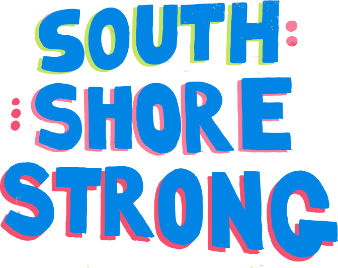
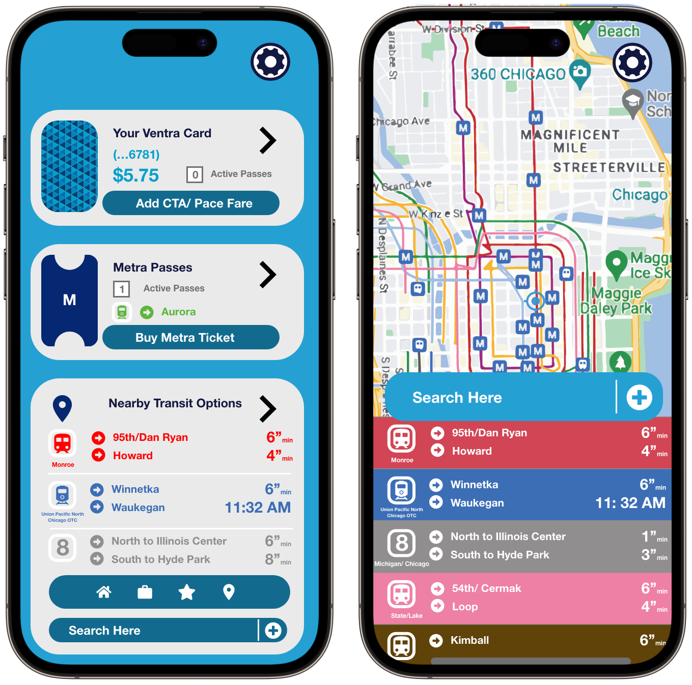
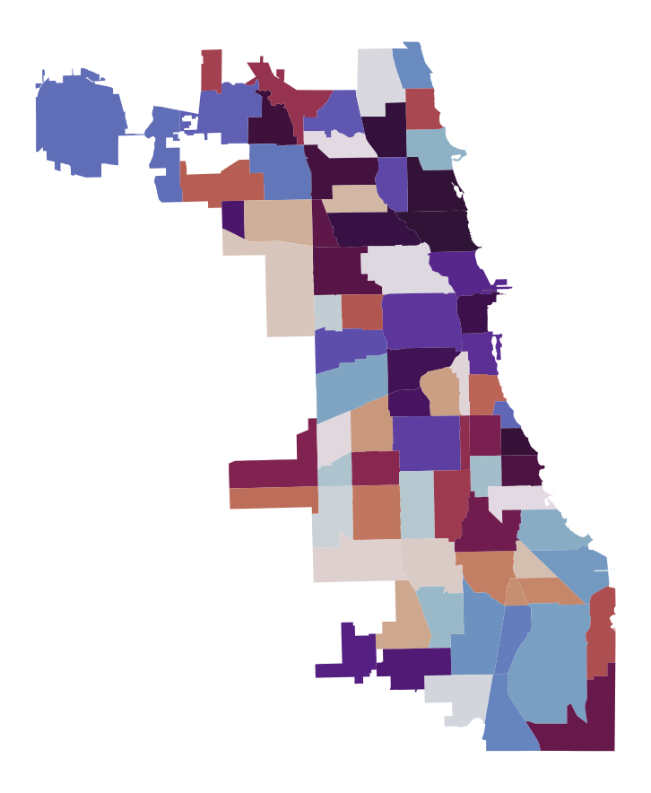

Selected Projects
Back to Home →Germany Privacy Guide
"Datenschutz," or Data Protection is
a
common phrase you'll hear in Germany.
I made this online guide for young ambassadors in
the Congress-Bundestag Youth Exchange program, as they navigate life in
Germany.
This guide provides a brief and friendly introduction to privacy
practices
and regulations in Germany. It explores the historical roots of privacy
protection and looks into how these regulations
shape everyday life.
Carnegie Mellon University
Public Service
Weekend Data Scopeathon for Social Good
D.C. Hunger Solutions Proposal
"Participants in this conference were competitively selected for their leadership potential and for their interest in learning about public policy, public interest tech (PIT) and international affairs. The weekend included guest speakers, workshops, networking and participation in a Data Scopeathon for Social Good where participants worked in teams to develop solutions for a nonprofit partner organization. The weekend is organized in partnership with the PPIA Program and NASPAA."
Over the weekend, my team and I worked with the DC Hunger Solutions' Director, LaMonika N. Jones, to enhance outreach and address food insecurity in D.C.'s 7th and 8th Wards across the Anacostia River. Our proposed solution includes refined analysis and validation steps, utilizing clustering ML models to effectively target and support individuals eligible for SNAP benefits.
In the end, my team won the prize for the "Most Implementable" project. This highlights the practicality of our proposal and the feasibility of our recommendations in supporting DC Hunger Solutions' SNAP Goals.
MAPSCorps: South Shore Youth-led Policy Project
I had the pleasure of joining the City of Chicago STEAMbassadors and MAPSCorps as a Data Coordinator during the summer of 2022, contributing to a non-profit organization dedicated to data-driven community advocacy.
My responsibilities included educating High Schoolers on data literacy, managing the collection of Southeast Chicago community asset data, as well as overseeing the development of a research project examining the relationship between asset conditions in the South Shore community area and gun violence.

Adapted from a mural on 71st/Jeffrey BlvdCourse Projects
STAT 207: Data Science Exploration: Parsimonious Model: Physicochemical Properties of High-Quality Red Wine
Research Question: How can logistic regression modeling and analysis be used to isolate the properties that contribute to high wine quality for production proposes?
As part of my class final, I explored the statistical applications behind Data Science to isolate the qualities that contribute to high wine quality. Wineries may be able to use these findings to strategize production processes that favor these traits. This project involved Exploratory Data Analysis, Descriptive Statistics, Inferencing, and Logistic Regression analysis.
In building a logistic regression model, I applied statistical analysis, such as ROC Curve and Backwards Elimination, to create a parsimonious model as a means to identify key traits of high-quality wine.
The analysis performed in this study provides valuable insights into the factors that are most critical for producing high-quality red wine. Ultimately, I was able to identify key explanatory variables and created a logistic regression model with an 87% Sensitivity, or True Positive rate.
IS226: Introduction to Human-Computer Interaction: Ventra Application Redesigned
The project involves redesigning Ventra, the Chicagoland Regional Transit Application, to create a seamlessly integrated and user-friendly platform for tracking and utilizing public transportation efficiently.

As a Chicago Native, I am aware of Ventra's limited features and outdated design. The application currently supports essential functions like reloading Ventra cards, purchasing Metra train passes, tracking transit options, and offering directions for Chicago Transit Authority, Metra, Pace, and Divvy Bikes. Despite its functionality, there's a noticeable lack of integration in the app's design.
The primary goal is to enhance user experience by providing a cohesive platform that integrates all transit options from the three major Chicagoland Transit Agencies, making it easy for users to review and utilize public transportation.
IS327: Concepts of Machine Learning: Classifying Chicago Community Areas
Decision Tree Classification: Modeling Differences in Chicago Community
Areas
Dataset: Census Data - Selected socioeconomic indicators in Chicago,
2008-2012

This was a simple class project focused on applying the Machine Learning concepts covered. I chose to use Decision Tree modeling to gauge the types of insights that could be drawn from the unsupervised model in terms of its classification of Chicago community areas based on socioeconomic data.
IS204: Research Design for Information Sciences: Health System Analysis
Explores the characteristics of various healthcare systems across the nations and understand the potential factors that influence healthcare system performances.
By understanding how the quality of healthcare systems varies under different settings, we can provide solutions to improve healthcare systems. The dataset used for this research is the Compendium of U.S. Health Systems (2021 updated), provided by the Comparative Health System Performance Initiative. It includes 637 healthcare systems across the nation, with useful variables for analysis, such as total counts of physicians, primary care physicians, physician assistants, nurse practitioners, and many more.